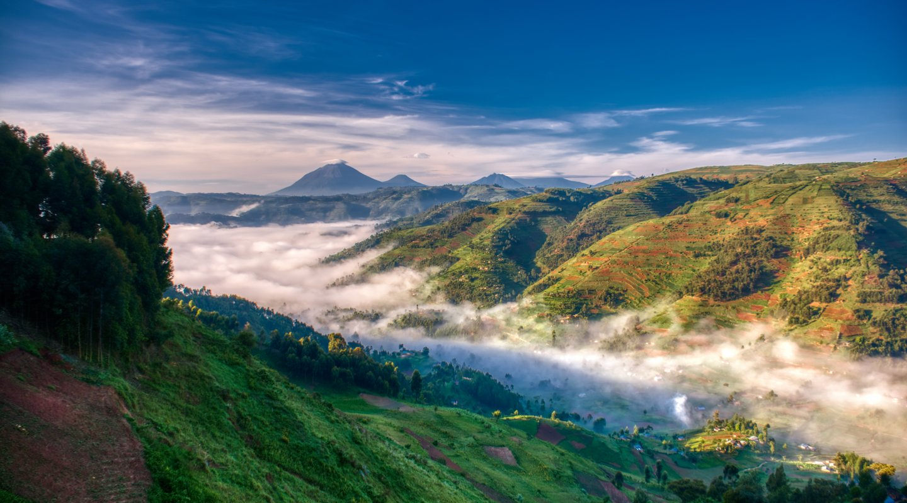
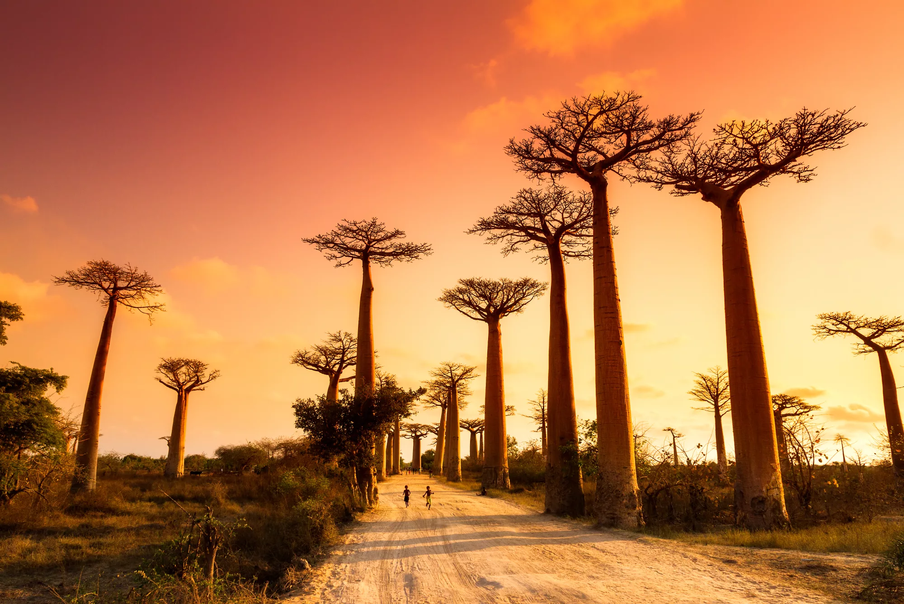
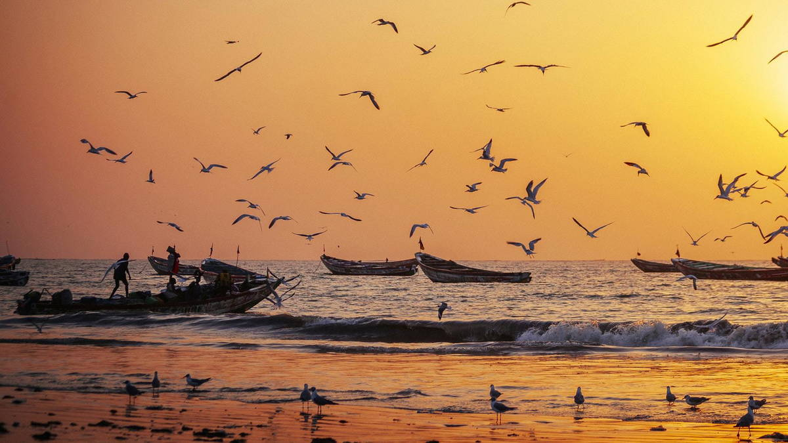
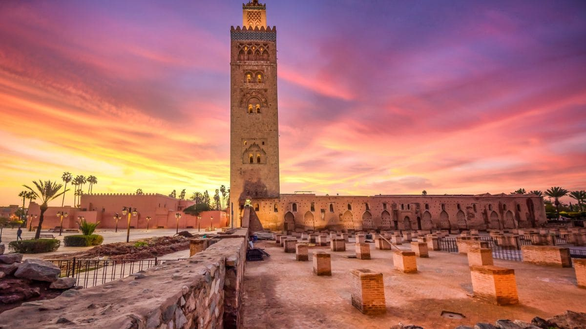

ÁFRICA 🌍
-
África Central
Expediciones al corazón de la selva y logística de conservación de grandes primates.
RD DEL CONGO: un viaje al corazón verde del continente y sus santuarios naturales.
.png)
Montañas del Parque Nacional Kahuzi-Biega, hogar de los últimos gorilas de llanura o gorila de Grauer (Gorilla beringei graueri) PARQUE NACIONAL DEL KAHUZI-BIEGA


.png)
.jpg)
.jpg)


PARQUE NACIONAL VIRUNGA


RUANDA: la niebla eterna...

Brumas matinales sobre la cordillera de los Volcanes, santuario del gorila de montaña (Gorilla beringei beringei) 📷 En proceso: Tras los pasos de los gigantes de montaña en el Parque Nacional de los Volcanes.
-
África Occidental
La herencia del río Gambia y los colores del África más acogedora.
SENEGAL: la esencia de la Teranga...

Atardecer entre baobabs milenarios en la región de Fatick, cuna de la cultura Serer y la esencia de la Teranga 📷 En proceso: Documentando la luz de Saint-Louis y los santuarios de aves del Delta del Saloum.
GAMBIA: la vida a orillas del río en la sonrisa de África Occidental.

Pescadores en el Atlántico 📷 En proceso: Crónicas desde las reservas naturales y los manglares del gran río.
-
África del Norte
Laberintos de medinas y la inmensidad del desierto.
MARRUECOS: Laberintos de callejuelas y medinas.

Medina de Fez 📷 Próximamente: Un recorrido visual desde el azul de Chefchaouen hasta las arenas del Sáhara.